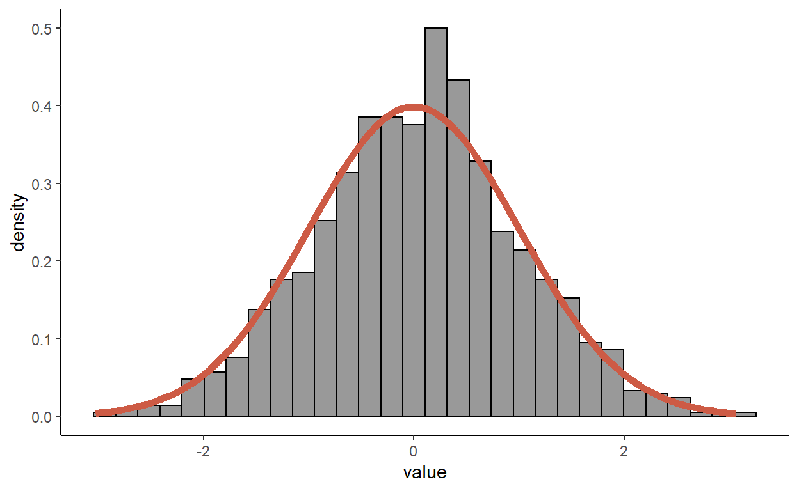
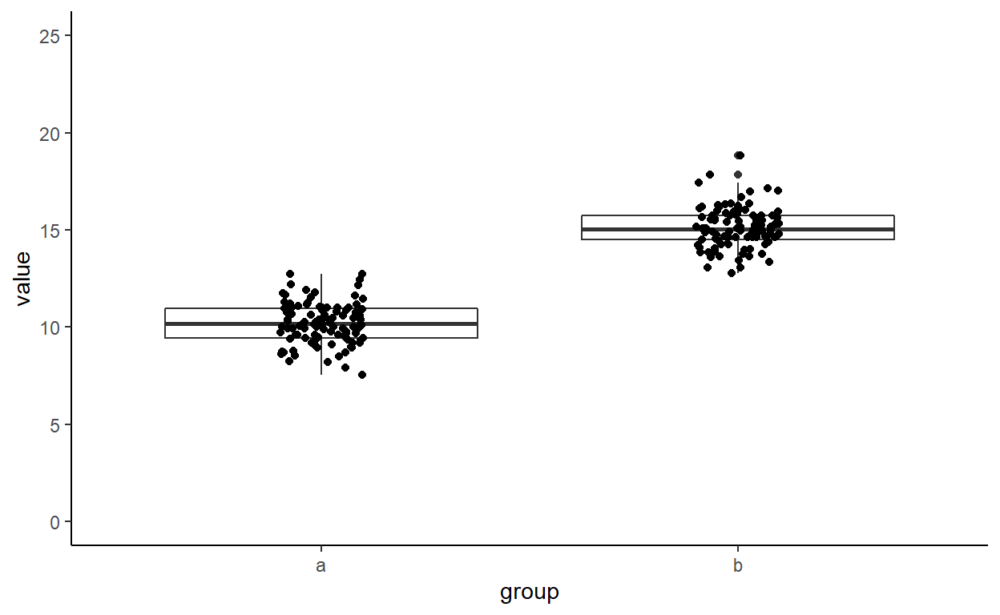

REPASO TEAD
INTRO

Ventana (1): es el editor de sintaxis: se trata del lugar donde editamos la sintaxis para posteriormente ejecutarla. Al escribir allí no sucederá nada, a no ser que se apriete algún botón para ejecutar los comandos o la tecla ctrl+enter.
Ventana (2): es el “entorno de trabajo” del programa: en este lugar se muestra el conjunto de datos y los “objetos” (resultados, variables, gráficos, etc.) que se almacenan al ejecutar diferentes análisis.
Ventana (3) tiene varias sub pestañas: (i) la pestaña files permite ver el historial de archivos trabajados con el programa; (ii) la pestaña plots permite visualizar los gráficos que se generen; (iii) la pestaña packages permite ver los paquetes descargados y guardados en el disco duro así como gestionar su instalación o actualización; (iv) la ventana help permite acceder al CRAN - Comprehensive R Archive Network (siempre que se cuente con conexión a Internet), página oficial del software que ofrece diferentes recursos para el programa: manuales para el usuario, cursos on line, información general, descarga de paquetes, información de los paquetes instalados, etc. Esta última pestaña es bastante útil: empleando el motor de búsqueda se accede de manera rápida a manuales de uso de los diferentes paquetes (y sus funciones) instalados en el computador (esto no requiere conexión a Internet).7; (v) la ventana viewer muestra los resultados al construir reportes mediante funcionalidades tipo rmarkdown.
Ventana (4): es la consola. Corresponde a lo que sería el software R en su versión básica. Allí el software ejecuta las operaciones realizadas desde el editor de sintaxis.
Hablando con R
Lo que se escribe en R puede ser:
- Operadores: (lenguaje reservado) Ex:
+,-,*. - Funciones : hacen cosas “complejas” Ex:
sum(),max(),lm(). - Objetos: Cosas (o grupos de cosas) con un valor que están guardadas en la memoria.
- Palabras reservadas: Operadores, funciones u objetos que ya tienen un significado en R. Són las bases del lenguaje de programacion-
1. Operadores y funciones
Operadores aritméticos
R puede funcionar como una calculadora gracias a los operadores que trae “de serie”. Puede hacer sumas (+), restas (-) , divisiones (/) multiplicaciones (*) y exponentes (^). Por ejemplo podemos decir a r que calcule 1+1:
1 + 1Relaciones
R puede comprender relaciones entre variables. Por ejemplo, podemos preguntar a R si un valor es más grande que otro. La respuesta és un TRUE o un FALSE.
- > : Mayor que..
- < : Menor que..
- == : Igual que..
- <=: Menor o igual que…
- >=: Mayor o igual que…
- !=: Diferente a…
2 > 1Lógicas
Las operaciones lógicas són una forma de decir “y” , “o” y “no” a R.
& : and | : or ! : no
Normalmente se utilizan en combinación con las operaciones relacionales. por ejemplo:
Ejecuta el código. Cámbialo para preguntar si 10 és mayor o igual a 4,10 y 11
5 > 1 & 5 > 6También sirven para preguntar si dos valores u objjetos son DIFERENTES
Ejecuta el código. Pregunta si 5 y 5 son diferentes
5 != 1Asignación
Aquí ya entramos en materia…
En vez de escribir todo el rato los números podemos utilizar un trocito de la memoria RAM de nuestro ordenador para que se acuerde del numero (también se puede hacer con otros objetos) y le ponga una etiqueta. La forma de hacerlo es la siguiente:
etiqueta <- 1Ahora el ordenador ha guardado una variable llamada etiqueta con valor 1.Ahora si queremos rescatar la variable ya tenemos una etiqueta para utilizarla. Por ejemplo:
etiqueta != etiqueta## [1] FALSEEP!! Si utilizamos una misma etiqueta para dos objetos sólo uno se quedará guardado. R lee el código secuencialmente línea tras línea lo que hará será dar el último valor asignado.
x <- 1
x<- 2
x## [1] 2Funciones de R
En R se pueden crear y utilizar funciones. Algunas ya vienen con R y otras se incluyen en paquetes o packagesque hay que instalas y cargar.
Ejemplos:
x <- c(1,2,3)
sum(x) #Suma valores
length(x) #informa de la cantidad de elementos en el vector
order(x) #Ordena los elementosEjercicio: Operadores y funciones
- Crea una variable llamada
xcon valor 10 - Crea una variable llamada
ycon un valorx^2. - Pregunta a R si x es más grande que y
x <-10
y <- x^2
x>y2. Objetor básicos
R tiene diferentes tipos de objetos, cada uno con una funcionalidad específica asociada.
Variables
Cómo ya hemos visto, se puede asignar a una “etiqueta” un valor específico. Estas variables pueden ser de diversos tipos. En general podemos distinguir:
numeric: Números de-infinitoainfinitocon sus decimales.character: Variable de texto.factor: Variable categórica o factor con diferenteslevels(categorías)
R es más o menos listo con esto (muchas veces menos que más) y ya le asigna un tipo de variable cuando se crea.
Para saber del tipo de variable que se trata podemos utilizar la funciónclass()
Ejecuta el código. Cambia el texto asignado a “variable” por
138 y aplica de nuevo la función “class”
variable <- "Rick"
class(variable)variable <- 138
class(variable)Muchas veces R se equivoca. En este caso hay que cambiar manualmente el tipo de variable. Lo podemos hacer mediante las funciones as.-.
as.characteras.factoras.numeric
variable <- "Rick"
class(variable)
variable <- as.factor(variable)
class(variable)Vectores
Los vectores son listas ORDENADA de objetos DE UN SOLO TIPO. Podemos tener vectores numéricos, categóricos, etc. Para crear vecotres se utiliza la función c()
CosesQueMagradenSORRYButDealWithIt <- c("PizzaAmbPinya", "BitterKas")
class(CosesQueMagradenSORRYButDealWithIt)## [1] "character"
Ejercicio: Crea un vector llamado “kk” con los valores 1, 11, 111 y 1111. Pregunta a R de qué tipo de objetos está formado
kk<- c(1,11,111,1111)
class(kk)Podemos acceder a los valores del vector por su orden mediante vector[i].I puede ser un vector. Por ejemplo:
kk<- c(1,2,3,4)
kk[1]
kk[c(1,2)]kk<- c(1,2,3,4)
kk > 2Ejercicio: Crea un vector y que contenga los valores mayores de 5 del vector x . Para hacerlo tienes que utilizar una función lógica
x <- runif(100, #Crea un vector de 100 numeros
0, #entre 0
20) #Y 20x <- runif(100,
0,
20)
y <- x[x>5]Dataframes
Un dataframe es un conjunto de vectores con el mismo orden, es decir, que el valor 1 de cada vector corresponden a la misma observación. Para crear un dataframe se puede utilizar la función data.frame()
sitio <- c("Polo norte", "Sahara", "Tu casa")
bueno <- c("No se derrite helados", "Te pones morenito", "tranquilisimo")
malo <- c("hace rasca", "muerte por insolación", "aburrido")
puntuacion <- c(3,4,8)
sitios.data <- data.frame(sitio, bueno,malo, puntuacion) #no es necesario poner .data, pero ayuda a seguir el códigoPodemos acceder a cada uno de los elementos en el dataframe con [] de la misma manera que hacemos con los vectores. Sólo hay que tener en cuenta que habrá que aportar dos valores ( o vectores) separados por coma. La coma SIEMPRE es necesaria, pero si no ponemos ningún valor se seleccionan todos los valores.
sitios.data[1,] #Primera filasitios.data[,1] #Primera columnasitios.data[c(1,2),c(3,4)] #Primera y segunda fila de la tercera y cuarta variableSe puede seleccionar una variable concreta del dataframe con $.
puntuacion sea de tipo character
sitios.data$sitio
class(sitios.data$sitio)
sitios.data$sitio <- as.factor(sitios.data$sitio)
class(sitios.data$sitio)También podemos utilizar $ para crear una nueva variable
puntuacion sea de tipo character
sitios.data$puntuacion2 <- sitios.data$puntuacion*2
sitios.data$puntuacion2Importar DATOS
Importar datos en R puede ser algo difícil a veces. Como regla general intenta seguir estos pasos:
1: Mira cómo son los datos que quieres importar
Es importante saber de antemano algunas cosas de la base de datos que quieres importar. Las 5 características más importantes en las que te tienes que fijar son:
- FORMATO . Esto es seguramente lo más important ya que dependiendo del formato hay diferentes métodos para importar los datos. Normalmente quieres que esté en formato
.csv. - Primera línea REAL. Es decir, la fila en la que se encuentran los títulos de las columnas.
- Separador decimal. Si es un
.o,. - Separador de valores. Esto no lo puedes ver a simple vista pero cuando lo guardas puedes seleccionarlo. Por ejemplo “UTF-8 delimitado por comas” es un formato que separa los valores con comas.
- El directorio. Es decir, la carrpeta en la que se situan tus datos debtro de tu ordenador. Por lo general intenta siempre ponerlo en la misma carpeta que el código. Entonces podrás seleccionar en el menú “Session>Set working Directory > To source File Location” y sólo tendrás que poner el nombre del archivo.
Una vez sabes esto ya puedes importar los datos:
loynn.data <- read.csv("./data/loyn.csv", #Nombre del dataset. Yo lo he puesto en una subcarpeta llamada "data". Si está en el mismo sitio exactamente simplemente hay que poner el nombre. "loyn.csv".
skip=14, #Líneas antes de la primera linea real
sep=",", #Separador de valores
dec="." #Spearador decimal
)
head(loyn.data)head() es una buena manera de mirar por encima los datos para ver si se han importado correctamente.
AMAZING!
DISTRIBUCIÓN NORMAL Y T-STUDENT
La distribución normal corresponde a una distribución de datos SIMÉTRICA, con forma de campana.
## `stat_bin()` using `bins = 30`. Pick better value with `binwidth`.
Inspección visual
Vamos a tomar como ejemplo la cariable ABUND del dataset loyn que ya hemos importado como loyn.data. Para ver si los datos siguen una distribución normal podemos representarlos:
par(mfrow=c(1,2)) #Dividimos la pantallita en 2 para poner los graficos juntos
hist(loyn.data$ABUND) #Representación con un histograma
boxplot(loyn.data$ABUND) #Representación con un boxplotTIENE BUNA PINTA!
Test de normalidad
Vamos a ver si la distribución de nuestra variable se diferencia estadísticamente de una distribución normal. El test más famoso para mirar la normalidad es el de shapiro:
shapiro.test(loyn.data$ABUND)##
## Shapiro-Wilk normality test
##
## data: loyn.data$ABUND
## W = 0.93802, p-value = 0.0064UPS! Parece que se aleja significativamente de una distribución normal!!
(pero vamos a hacer como que no hemos visto nada para juju)
Obtención de los parámetros
Para obtener la distribución normal necesitamos:
- La media
- La desviación estándar
mean() y sd()
mean(loyn.data$ABUND) #Mean
sd(loyn.data$ABUND) #Desviación EstándarPlot de la distribución
Podemos dibujar una curva con esta distribución con la función curve.
mean <- mean(loyn.data$ABUND) #Mean
sd <- sd(loyn.data$ABUND) #Desviación Estándar
curve(dnorm(x, mean = mean, sd = sd),#Curve dibuja curva de una función
from = -10,#Valor Mínimo del plot
to = 50,#Valor máximo del plot
ylim = c(0, 0.05)) #ylim define limites de yTest de hipótesis
Imaginemos que hay un estudio que dice que la media de ABUN es siempre 15. Podemos decir que nuestra media de 19.51 es significativamente diferente?
H0 : ES IGUAL a 15 H1 : ES DIFERENTE a 17
Para ello se calcula un estadístico T, que aumenta según el valor que se quiere comparar de aleja de los valores observados.
Para representar la T-student.
\[t= \frac{\widehat{x}-\nu }{SE}\]
- \(\widehat{x}\): Media
- \(\nu\): Valor de referencia
- \(SE\): Error estándar
R no tiene una función para calcular el error estándar así que hay que crearla. CALMA, no hace falta saber crear funciones para TEAD, simplemente copiad esto.
se <- function(x) sqrt(var(x) / length(x))Para seguir con los cálculos es importante determinar los grados de libertad (df). Por definición, en un estadístico con una variable los grados de libertad son el número de observaciones n -1
df <- length(loyn.data$ABUND)-1
dfCalculamos la T-student:
mean <- mean(loyn.data$ABUND) #Media
SE<- se(loyn.data$ABUND) #Error estándar
ref <- 15 #Valor para comparar
tobs <- (mean- ref)/ SE #Calculo T observado
tobsPodemos utilizar la fórmula con los parámetros calculados para representar los diferentes valores que tendría la T-student para un rango de valores de referencia.
La función dt() genera la curva de la función T-student para df grados de libertad. La podemos utilizar para visualizar los resultados:
curve(dt(x, df=55),
-10, 10) #Esto marca los límites del plot.
abline(v =tobs, lty=2, col="dodgerblue") #Línea vertical marcando valor t
abline(v =-tobs, lty= 2, col="dodgerblue")#y -tqt() calcula el estadístico T-student que tendría una probabilidad p de ocurrir si la media y el valor de referencia fueran idénticos.
curve(dt(x, df=55),
-10, 10) #Esto marca los límites del plot.
abline(v =tobs, lty=2, col="dodgerblue") #Línea vertical marcando valor t
abline(v =-tobs, lty= 2, col="dodgerblue")#y de -t
prob <- qt(0.025, df =29) #Valor que deja un 2.5% de la probabilidad fuera
abline(v= prob, lty= 2, col= "red")
abline(v= -prob, lty= 2, col= "red")Se puede obtener el P valor con la función pt(), que indica que probabilidad hay dada una distribución normal de que el estadístico T-student sea mayor al indicado. Se multiplica por dos para obtener la probabilidad de que sea más grande o menor al valor absoluto (~probabilidad de que esté más alejado)
pt(abs(tobs), #Valor absoluto
df= 55, #grados de libertad (n-1)
lower.tail=FALSE)*2 Obtenemos un P-valor de 0.004, así que para un \(\alpha\) de 0.05, se trata de una diferencia significativa.
Bueno, llegados a este punto te mereces que te confiese que hay una función justo para hacer todo esto:
t.test(loyn.data$ABUN,
mu=15)Nos quedamos con la hipótesis alternativa: La media de los valores observados difieren significativamente de 15.
Ejercicios
Contexto Un general de las fuerzas armadas está preocupado porque ha leído un estudio que relaciona la necesidad de ejercer la violencia con un cierto complejo respecto la mida del… pulgar. Te encarga a ti, una persona de ciencia, estudiar si los pulgares de sus soldados son significativamente inferiores (o superiores, quién sabe) a la media nacional, que es de 13.58 cm. Para ello te proporciona la medida del pulgar de los 5.000 efectivos del ESTADO
EX1: Representa gráficamente la distribución de la mida del pulgarhist(p.data) #Parece normalp.data.
shapiro.test(p.data) #NORMALmean <- mean(p.data) #Media
sd <- sd(p.data) #SDmean <- mean(p.data) #Media
sd <- sd(p.data) #SD
curve(dnorm(x, mean = mean, sd = sd),
0,20)
abline(v= 13.58, lty= 2, col= "red")t.test(p.data, mu=13.58)Regresión Lineal
Un modelo de regresión lineal predice el valor de una variable Y en función del valor de una variable X. Para ello se definen 2 parámetros
\(Y = b_0 + b_1X + E\)
- \(b_0\): Ordenada al orígen.
- \(b_1\): Pendiente de la recta
- \(E\) : Error
El modelo de regresión lineal minimiza el error al cuadrado.
Pasos a seguir
Para ejemplificar todos los pasos, vamos a trabajar con un dataset que consiste en notas reales de alumnos. Vamos a ver si podemos predecir la nota en escritura basándonos en la nota en matemáticas.
head(exams.data)1. Plot de los datos
El primer paso siempre es ver si tiene sentido intentar ajustar un modelo. Si no se puede ver ninguna tendencia, seguramente no tenga sentido ajustar un modelo lineal.
ggplot(exams.data, aes(x=math.score, y=writing.score)) +
geom_point() +
geom_smooth() +
theme_classic()Parece que si que tiene sentido ajustar una regresión lineal.
Vamos a ver más al detalle cómo he fabricado este plot con el paquete ggplot2:
ggplot()
ggplot() 
ggplot()Sirve para generar un plot. Lo que se pone dentro de la función sirve para que ggplot2 sepa qué datos va a tener que representar. El primer argumento son los datos.
aes()
ggplot(exams.data, aes(x=math.score, y=writing.score)) aes()Sirve para determinar los aesthetics, es decir, la estructuración de los datos en el plot. Se determina la función de cada variable (un eje, un gradiente de colo, etc). En este ejemplo se les da la las variables el rol dexy dey.
Pero nos falta el contenido!
geom_()
ggplot(exams.data, aes(x=math.score, y=writing.score)) +
geom_point()+
geom_smooth()geom_()sirve para indicar las geometrías. Las geometrías son las diferentes formas de representar los datos, así que son el contenido del plot. Por ejemplo,geom_point()representa los datos en forma de scatterplot y geom_smooth ajusta la función suavizada que mejor explica el patrón de los puntos.
Se pueden asignar aesthetics solo a una geometría. Por ejemplo:
ggplot(exams.data, aes(x=math.score, y=writing.score)) +
geom_point(aes(col=test.preparation.course))+
geom_smooth()theme()
ggplot(exams.data, aes(x=math.score, y=writing.score)) +
geom_point()+
geom_smooth()+
theme_bw()theme()sirve para manipular los ajustes. Hay themes predeterminados, por ejemplotheme_bw()
2. Ajustar el modelo
La forma en que se consigue el mejor modelo es minimizando la distancia total entre los puntos y la recta. Recta SIMEPRE pasa por la media de las dos variables
para ajustar el modelo se utiliza la función lm().
El modelo que mejor se ajusta a los datos ha quedado guardado en un objeto con el nombre m1. Este objeto contiene toda la información necesaria. Para ver un resumen podemos llamar la función summary()
m1 <- lm(writing.score~math.score, #Formula y~x.
data=exams.data) #Datos
summary(m1)Primero de todo, nos fijamos en si el modelo predice significativamente más que el modelo nulo (sin pendiente).
Vemos que el p valor (Pr(>|t|), a.k.a. probabilidad (Pr) de obtener por azar un valor absoluto del estadístico T más grande (>|t|)) de la pendiente (math.score) és MUY inferior a 0.05, por lo que de momento nos quedamos con el modelo. El ultimo valor que aparece en la parte inferior, p-value, compara el modelo ajustado con un modelo nulo.
El Adjusted R-squared indica que el modelo obtenido explica un 64% de la variabilidad observada en la variable respuesta writing.score R2 es una medida estandarizada de la proporción de la bondad de ajuste. 0: variable no explica nada, 1: ajuste perfecto. R2 ajustada depende de la cantidad de variables explicativas utilizadas.
Nos podemos fijar también en los coeficientes Estimate. (Intercept) corresponde a la ordenada al origen \(b_0\) mientras que el nombre de la variable explicativa (math.score) corresponde al coeficiente de la pendiente \(b_1\).
Nos fijamos también que teníamos 1000 observaciones pero sólo hay 998 grados de libertad (df). Esto es porque hemos estimado DOS parámetros: la pendiente y la ordenada al origen.
3. Comprobar requisitos de la regresión lineal
Para poder interpretar la regresión lineal se necesita que se cumplan los siguientes supuestos:
Variables explicativa y respuesta son continuas. Pueden adquirir potencialmente cualquier valor.
Independencia de las observaciones. Cada observación tiene que ser independiente (en comparación con los otros puntos) del resto.
Relación lineal entre as variables. Es decir, no sirve con que hay una relación positiva, la pendiente tiene que ser constante para todo valor de x.
Normalidad del residuo del modelo. Es decir, la distancia entre los puntos y la recta tienen que seguir una distribución normal (muchos puntos cerca y menos según nos alejamos).
Homocedasticidad. AKA homogeneidad de la varianza. El error se mantiene más o menos constante para todos los rangos de la variable explicativa.
Homocedasticidad
Esto significa que los puntos estén más o menos igual de separados de la recta en todo el gradiente de y.
Esto lo podemos comprobar con un test, pero en TEAD simplemente se mira de forma visual, que es la manera más común de hacerlo. El gráfico que nos muestra la heterocedasticidad es el residual plot residuals vs fitted
Este plot se consigue comparando el residuo con el valor de la variable X.
residuals en la variable y ymath.score en la variable x
m1 <- lm(writing.score~math.score, #Formula y~x.
data=exams.data) #Datos
exams.data$residual <- m1$residualm1 <- lm(writing.score~math.score, #Formula y~x.
data=exams.data) #Datos
exams.data$residual <- m1$residual
ggplot(exams.data, aes(x=math.score, y=residual)) +
geom_hline(yintercept=0, lty=2)+
geom_point()Este tipo de gráfico se llama diagnostic plot. No hace falta que los hagamos a mano, aunque este ejercicio mejora la forma de entenderlo. Podemos conseguir los diagnostic plots con la función plot(). Esto nos da una lista de los 4 diagnostic plots que se pueden hacer para un modelo. En este caso nos interesa el primero. En concreto Residuals. vs. Fitted es el gráfico 1 (arriba a la izquierda). El gráfico 3 (abajo derecha) da una versión estandarizada.
Si se observan patrones es que no hay homocedasticidad.
m1 <- lm(writing.score~math.score, #Formula y~x.
data=exams.data) #Datos
par(mfrow=c(2,2)) #Dividir el espacio para gráficos en 4
plot(m1) #Plot los 4 dignóstic plotsVemos que los residuos no siguen del todo la distribución esperada. Esto se debe a la naturaleza no contíinua de nuestros datos.
Normalidad
ATENCIÓN: NO HACE FALTA QUE LAS VARIABLES TENGAN UNA DISTRIBUCIÓN NORMAL, SOLO EL RESIDUO DEL MODELO
## NULLPodemos comprovar la normalidad con un histograma y con un shapiro.test.
EJERCICIO: Esto ya lo sabes hacer! Mira sires , que contiene todos los residuos (distancias entre los puntos y la recta calculada) presenta una distribución normal. Hazlo mediante un gráfico y un test estadístico.
m1 <- lm(writing.score~math.score, #Formula y~x.
data=exams.data) #Datos
res <- m1$residualsm1 <- lm(writing.score~math.score, #Formula y~x.
data=exams.data) #Datos
res <- m1$residuals
hist(res) #tiene buena pinta
shapiro.test(res) #UPS!Otra forma de hacerlo és con el correspondiente QQplot, en que se compara la distribución de los residuos obtenidos (y) con la distribución de los residuos esperados en una distribución normal (x). Se trata del segundo plot (arriba a la derecha).
m1 <- lm(writing.score~math.score, #Formula y~x.
data=exams.data) #Datos
par(mfrow=c(2,2)) #Dividir el espacio para gráficos en 4
plot(m1) #Plot los 4 dignóstic plotsParece que la normalidad del residuo no se cumple. Esto puede ser causado por la violación de una de las condiciones para poder realizar una regresión lineal: Las variables NO son continuas, van de 0 a 100, por lo que el error hace cosas raras. En nuestro caso vamos a seguir adelante porque es solo un ejemplo pero en realidad se trendria que buscar un test alternativo. ____
MLR
La regresión lineal múltiple (MLR) sirve para conseguir explicar una variable y a partir de múltiples variables explicativas x.
Vamos a mirar la distribución de los datos con un boxplot. Para pode verlo mejor se puede utlizar la función sclae(), que resta la media y divide por la desviación estándar. A esto se le llama escalar o estandarizar. De esta manera muestra los datos con media = 0 y sd= 1.
No hace falta que las variables sean normales, pero si simétricas (igual arriba y abajo del medio de la caja).
Ejercicio: crea una variable log_writing,log_reading y log_maths que sea la raíz cuadrada de las variables originales writing.score, reading.scorey maths.score. Representalas con un boxplot() con las variables transformadas y las no transformadas (tadas escaladas) POR SEPARADO y decide cuales tienen una distribución más simétrica.
par(mfrow=c(1,2)) #Divide el espacio para plots en dospar(mfrow=c(1,2))
#OPCIÓN 1 (normal)
exams.data$log_writting <- log1p(exams.data$writing.score) #or log(x+1),
exams.data$log_reading <- log1p(exams.data$reading.score)
exams.data$log_maths <- log1p(exams.data$math.score)
#OPCIOÓN 2 (IQ > 9000)
exams.data[,9:11] <- log1p(exams.data[,6:8]) #La caca es que ahora hay
names(exams.data)[9:11] <- c("log_math", "log_reading", "log_writting")
#Boxplots
boxplot(
scale(exams.data[,6:8]), #6:8 is the same as c(6,7,8)
main="Raw data")
boxplot(
scale(exams.data[,9:11]),
main="Transformed")
#Las variables ya estaban biénAjustar el modelo
para ajustar el modelo de MLR se usa la función lm()
Vamos a empezar creando un modelo completo (con todas la variables). Personalmente, prefiero transformar explícitamente las variables dentro de la fórmula en vez de guardarlas transformadas con otro nombre, pero esto es personal.
Empezamos con un modelo completo en que sales se explica por dos variables, que pueden tener una interacción. Para indicar que las variables tienen interacción se utiliza xq*x2, pero también se puede utilizar x1+x2+x1:x2.
lmr1 <- lm(writing.score~math.score*reading.score, data=exams.data)
summary(lmr1)Ahora ya sabes leerv estas tablas…
el summary del modelo indica que todos las dos variables explicativas tienen un efecto significativo y existe una interacción entre ellas, por lo que hay que dejar todos los elementos en el modelo.
Vemos que el modelo tiene un ajuste MUY bueno (Adjusted R-squared: 0.967).
Asumciones
Esto también lo sabes hacer! Crea un histograma con los residuos del modelo (recuerda, se guardan en nombredelmmodelo$residuals) y los diagnostic plots. Qué te parecen?
mlr1<- lm(writing.score~math.score*reading.score, data=exams.data)
summary(mlr1)mlr1<- lm(writing.score~math.score*reading.score, data=exams.data)
hist(mlr1$residuals) #Uf, pero que histograma señores *-*
par(mfrow=c(2,2)) #Divide la zona de plots en una cuadrícula de 2x2.
plot(mlr1) #ESPECTACULAR El último gráfico representa cómo de influyentes son cada uno de los datos en el modelo. Los puntos muy alejados del modelo tienen a hacer un “efecto palanca” ya que tienen mucha más influencia que aquellos que se ajustan muy bien. Hay que ir con cuidado que ningún punto pase la distancia de Cook, dibujada en el gráfico con una línea de discontinua.
PLOT
Vale, ahora vamos a representar el resultado del modelo. Para ello vamos a utilizar el paquete ggeffects que permite resolver el modelo para diferentes valores de las variables explicativas.
library(ggeffects)
mlr1<- lm(writing.score~math.score*reading.score, data=exams.data)
pred_mlr1 <- ggpredict(mlr1, #Modelo
terms=c("reading.score", "math.score"), #Variables explicativas
back.transform = T) #En caso de que haya variables transformada directamente dentro del modelo (ex: y~log(x)), si queremos que se represente con la variable original
pred_mlr1 mlr1<- lm(writing.score~math.score*reading.score, data=exams.data)
pred_mlr1 <- ggpredict(mlr1, #Modelo
terms=c("reading.score", "math.score"), #Variables explicativas
back.transform = T)
plot(pred_mlr1, #predicción
rawdata = TRUE) #Esto hace que salgan los puntitos rogiginalesPodemos ver que la recta writing.score-reading.score se ve influenciada por el valor de math.score, tanto el intercept (efecto aditivo) como en la pendiente (interacción entre los efectos de las variables explicativas) pero no mucho.
one-way ANOVA
Normalmente, un análisis de la varianza (ANOVA) sirve para determinar si la diferencia observada sobre la media es significativa.
Por ejemplo, basándonos en el dataset anterior (notas reales de exámenes en función de diferentes factores) podemos estar interesados en si el almuerzo de los alumnos puede tener una influencia sobre el resultado de los tests.
Representación de los datos
Como siempre empezamos representando los datos. Intentalo hacer tu mism@:
_Crea un ggplot con geometria geom_histogram() que muestre las diferentes categorías de la variable lunch en el eje x y una variable con el nombre exams.mean con el valor medio de los tres exámenes (math.score, reading.score y writing.score) en el eje de las y.
exams.data$exams.mean <- "..."#1. Miro el tipo de variables
sapply(# sapply = Para todas las columnas ....
exams.data, #En exams.data...
class) #Dime la classe
#2 Correccion del tipo de ariable. Necesitamos que lunch sea un FACTOR
exams.data$lunch <- as.factor(exams.data$lunch)
#3. Creación de la variable
exams.data$exams.mean <- (exams.data$math.score + exams.data$reading.score + exams.data$writing.score) /3
ggplot(exams.data, aes(x=lunch, y=exams.mean)) +
geom_boxplot()+
theme_bw() #Este le gusta al proffeA simple vista parece que hay una diferencia en la distribución de los datos… pero es significativa??
Ajuste del modelo
Para ajustar el modelo anova se puede hacer con la función lm() o con la función aov(), que resenta directamente la tabla anova (comparación con el modelo nulo) del modelo lm()
La hipótesis que testamos es:
- P>0.05, \(H_0\): Ninguno del os grupos presenta una diferencia significativa respecto al resto
aov.model1 <- aov(exams.mean~lunch, data=exams.data)
summary(aov.model1)aov.model1 <- aov(exams.mean~lunch, data=exams.data)
summary(aov.model1)
aov.model2 <- lm(exams.mean~lunch, data=exams.data)
summary(aov.model2)Podemos ver que la diferencia entre los dos grupos es significativa (fila lunchstandard compara el nivel del que pone el nombre con el que no aparece) y supone una nota media 8.63 puntos superior en los alumnos que han tomado un almuerzo completo. El valor medio para el grupo free/reduced es el que aparece en la fila intercept (columne estimate). El p-valor de esta fila indica si la media es significativamente diferente a 0.
Asunciones
El modelo ANOVA asume que.
- La observaciones son independientes
- La distribución del error del modelo (~la distribución de la variable para cada categoría del factor) es normal
- Hay homocedasticidad aka homogeneidad de la varianza entre grupos
- El modelo está BALANCEADO
Normalidad
Intenta averiguar por ti mism@ si se cumple la asunción de normalidad
aov.model1 <- aov(exams.mean~lunch, data=exams.data)aov.model1 <- aov(exams.mean~lunch, data=exams.data)
hist(aov.model1$residuals) #Esto es opcional, aunque no está mal para entender lo que estamos haciendo.
par(mfrow=c(2,2))
plot(aov.model1) #QQplot plot no pinta muy mal
shapiro.test(aov.model1$residuals) #UpsParece que los residuos se alejan ligeramente de la distribución normal… vaya :(
Homocedasticidad
Tenemos que comprobar si la varianza es igual entre los grupos que estamos comparando.
datos heterocedásticos
datos homocedásticos

Para comprobarlo tenemos diferentes tests. En TEAD se utiliza especialmente el bartlett.test().
aov.model1 <- aov(exams.mean~lunch, data=exams.data)
par(mfrow=c(2,2))
plot(aov.model1)
#TRES OPCIONES
bartlett.test(exams.mean~lunch, data=exams.data) #Sensible a la normalidad
fligner.test(exams.mean~lunch, data=exams.data) #No tan sensible a violacion de la normalidad
car:: leveneTest(exams.mean~lunch, data=exams.data) En el primer y tercer gráficos podemos ver que no hay mucha diferencia entre la distancia de los puntos y la recta roja para los dos grupos. Esto nos da una idea de que hay bastante homocedasticidad. Aún así al bartlett test no le ha parecido suficiente.
¿Y qué hacemos si no se cumple normalidad y/o homogeneidad de la varianza?
La alternativa es hacer un test no paramétrico Kruskal-wallis,
kw.model <- kruskal.test(exams.mean~lunch, exams.data)
kw.modelDiseño balanceado
Diseño balanceado significa que los grupos comparados tienen que tener aproximadamente la misma cantidad de muestras. Lo podemos mirar con xtabs()
xtabs(~lunch, exams.data)
# fuckY ahora que??
Que no cunda el pánico. Si el diseño no está balanceado podemos utilizar una ANOVA con error tipo II (no hace falta entender esto). Para ello necesitamos el paquete car y su correspondiente función Anova(). IMPORTANTE: ya no da igual hacer el modelo con aov() o lm() ya que Anova necesita un modelo lm().
library(car)
aov.model1 <- lm(exams.mean~lunch, data=exams.data)
Anova(aov.model1, type=2)La representación gráfica seria la misma ya que lo único que cambia es el cálculo de significación del modelo, así que el modelo es igual.
POST-HOC
En el caso de una variable categórica que cuenta con solo 2 grupos, una ANOVA ya nos informa de la diferencia que hay entre grupos. Esto es distinto cuando trabajamos con factores con más categorías.
La variable race.ethinity de exams.data presenta más de dos niveles. Representa los datos en un ggplot
REPASO
1. Haz un boxplot en ggplot con esta variable en el ejex y exams.mean en el eje y
ggplot(exams.data, aes(x=race.ethnicity, y=exams.mean))+
geom_boxplot()aov.model2 <- lm(exams.mean~race.ethnicity, data=exams.data)
summary(aov.model2)aov.model2 <- lm(exams.mean~race.ethnicity, data=exams.data)aov.model2 <- lm(exams.mean~race.ethnicity, data=exams.data)
hist(aov.model2$res) #Meh
car:: qqPlot(aov.model2) # Meeeeh. Por cierto, esto simplemente es otra manera de ocnseguir un qqplot.
shapiro.test(aov.model2$res) #Meeeeeeeeehaov.model2 <- lm(exams.mean~race.ethnicity, data=exams.data)aov.model2 <- lm(exams.mean~race.ethnicity, data=exams.data)
car::residualPlot(aov.model2) # Nice!. Por cierto, esto simplemente es otra manera de conseguir el residual plot
bartlett.test(exams.mean~race.ethnicity, data=exams.data) #Ok
car::leveneTest(exams.mean~race.ethnicity, data=exams.data) #Ok!xtabs(~exams.data$race.ethnicity) #Fuck En este caso en concreto tendríamos que hacer un test de Kruskal-Wallis dado que no se cumple la normalidad del residuo. Si se cumpliera, se tendría que obtener un test de significación con una ANOVA type II dado que el modelo no es balanceado.
En todo caso, si el modelo resulta explicar una proporción significativa de la varianza, aún nos quedará una duda por resolver…
Qué grupos son diferentes?
En el summary() del lm() en este ejemplo podemos ver que aparecen todas las diferentes categorías del factor menos group.A. En realidad solo se compara cada grupo con group.A, es decir, que estimate indica la posición relativa de la media y el test de hipóteis corresponde a la comparación entre la media de cada grupo y group.A.
Para realizar ocmparaciones entre todas las categorias se necesita realizar un análisis post-hoc.
Si se realiza un análisis paramétrico anova esto se hace con un Tukey test.
aov.model2 <- aov(exams.mean~race.ethnicity, data=exams.data)
TukeyHSD(aov.model2)Si se realiza un análisis no paramétrico (Kruskal Wallis) las comparaciones entre grupos se realizan con un Dunn Test. FÍJATE en cómo hay que introducir los datos!!
kw.model2 <- kruskal.test(exams.mean~race.ethnicity, data=exams.data)
dunn.test::dunn.test(exams.data$exams.mean, #Variable respuesta
g=exams.data$race.ethnicity) #Factortwo-way ANOVA
En vez de un factor puede ser que tengamos dos factores que modulan la media de nuestra variable respuesta.
Representación de los datos
Por ejemplo, podemos tener en cuenta, además del almuerzo de cada alumno, si ha completado o no un curso de preparación para el examen.
Modifica este plot para generar un boxplot con la exams.mean en el eje y, lunch en e eje x y el color (fill) en función de test.preparation.course (factor).
ggplot(exams.data, aes(x=lunch, y=exams.mean))ggplot(exams.data, aes(x=lunch, y=exams.mean, fill=test.preparation.course)) +
geom_boxplot()Parece que ambos factores pueden tener algo que ver con los resultados de los exámenes.
Un modelo ANOVA con dos factores no es muy diferente a un modelo ANOVA normal. De hecho, se utiliza la misma función, tiene la misma interpretación y las asunciones son las mismas.
Un elemento que aparece cuando añadimos otro factor es la posible interacción entre factores. La interacción es un elemento que se añade o no al modelo e implica que el efecto de un factor depende del otro.
La interacción se puede indicar de dos formas:
f1:f2. Indica ÚNICAMENTE la interacción, por lo que el modelo completo seriay ~ f1 + f2 + f1:f2f1*f2. Indica el modelo completo, es decir que ya incluyef1,f1y su interacción.
aov.model3 <- aov(exams.mean ~ lunch*test.preparation.course, data=exams.data)
summary(aov.model3)El resultado se interpreta exactamente igual que en los summary() anteriores, Se observa que ambos factores tienen un peso significativo pero no su interacción, por lo que HAY QUE REHACER EL MODELO para pode interpretarlo.
aov.model4 <- aov(exams.mean ~ lunch+test.preparation.course, data=exams.data)
summary(aov.model4)Podemos generar un plot del modelo con la función ggpredict() del paquete ggforce
library(ggeffects)
plot(
ggpredict(
aov.model4,
terms = c("lunch", "test.preparation.course")),
rawdata = FALSE)Comparacaión de modelos
Hemos creado un modelo ANOVA de un factor y de dos factores y hemos visto que los dos eran significativamente diferentes al modelo nulo. Aún así, nos puede interesar comparar los modelos entre ellos para ver is son significativamente diferentes. Esto lo podemos hacer con la función anova()
aov.model1 <- aov(exams.mean ~ lunch, data=exams.data)
aov.model4 <- aov(exams.mean ~ lunch+test.preparation.course, data=exams.data)
anova(aov.model1, aov.model4)Esto lo podemos hacer si los modelos están ANIDADOS, es decir, uno de los dos modelos contiene todas las variables del otro.
Si, por ejemplo, quisiéramos comparar dos modelos con únicamente uno de los factores cada uno habría que hacerlo de otra manera
Corre este chunk y obsrva que no hay un p-valoraov.model1 <- aov(exams.mean ~ lunch, data=exams.data)
aov.model5 <- aov(exams.mean ~ test.preparation.course, data=exams.data)
anova(aov.model1, aov.model5)No podemos comparar los modelos con un test de hipótesis ya que no están anidados.
AIC
Podemos compararlos con AIC. AIC se reduce a medida que aumenta la bondad de ajuste pero penalizada con la complejidad del modelo. Por un lado, da un valor bajo al modelo si el ajuste es mejor. Da una idea de la verosimilitud del modelo.aov.model1 <- aov(exams.mean ~ lunch, data=exams.data)
aov.model3 <- aov(exams.mean ~ lunch*test.preparation.course, data=exams.data)
aov.model4 <- aov(exams.mean ~ lunch+test.preparation.course, data=exams.data)
aov.model5 <- aov(exams.mean ~ test.preparation.course, data=exams.data)
AIC(aov.model1, aov.model3, aov.model4, aov.model5)Parece que el mejor modelo es el que ocntiene los dos factores sin la interacción.